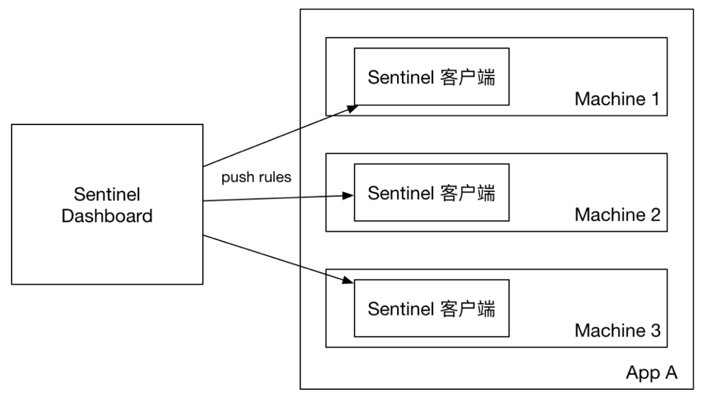
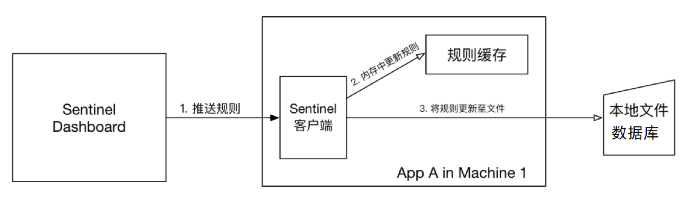

「Sentinel - 7」-- 规则配置持久化
规则配置持久化
规则
Sentinel 的理念是开发者只需要关注资源的定义，当资源定义成功后可以动态增加各种流控降级规则。Sentinel 提供两种方式修改规则：
- 通过 API 直接修改 (
loadRules) - 通过
DataSource适配不同数据源修改
通过 API 修改比较直观，可以通过以下几个 API 修改不同的规则：
1 | FlowRuleManager.loadRules(List<FlowRule> rules); // 修改流控规则 |
手动修改规则（硬编码方式）一般仅用于测试和演示，生产上一般通过动态规则源的方式来动态管理规则。
规则管理模式
Sentinel的控制台规则管理有三种模式：Sentinel的规则默认是保存在内存中，Sentinel重启之后规则就会丢失
| 推送模式 | 说明 | 优点 | 缺点 |
|---|---|---|---|
| 原始模式 | API 将规则推送至客户端并直接更新到内存中，扩展写数据源（WritableDataSource），默认就是这种 | 简单，无任何依赖 | 不保证一致性；规则保存在内存中，重启即消失。严重不建议用于生产环境 |
| [Pull 模式 | 扩展写数据源（WritableDataSource）， 客户端主动向某个规则管理中心定期轮询拉取规则，这个规则中心可以是 RDBMS、文件 等 | 简单，无任何依赖；规则持久化 | 不保证一致性；实时性不保证，拉取过于频繁也可能会有性能问题。 |
| Push模式 | 扩展读数据源（ReadableDataSource），规则中心统一推送，客户端通过注册监听器的方式时刻监听变化，比如使用 Nacos、Zookeeper 等配置中心。这种方式有更好的实时性和一致性保证。生产环境下一般采用 push 模式的数据源。 | 规则持久化；一致性； | 引入第三方依赖 |
原始模式
控制台配置的规则直接推送到Sentinel客户端，也就是我们的应用。然后保存在内存中，服务重启则丢失。
Pull模式
实现拉模式的数据源最简单的方式是继承 AutoRefreshDataSource 抽象类，然后实现 readSource() 方法，在该方法里从指定数据源读取字符串格式的配置数据。比如 基于文件的数据源。
控制台将配置的规则推送到Sentinel客户端，而客户端会将配置规则保存在本地文件或数据库中。以后会定时去本地文件或数据库中查询，更新本地规则。
Push模式
实现推模式的数据源最简单的方式是继承 AbstractDataSource 抽象类，在其构造方法中添加监听器，并实现 readSource() 从指定数据源读取字符串格式的配置数据。比如 基于 Nacos 的数据源。
控制台将配置规则推送到远程配置中心，例如Nacos。Sentinel客户端监听Nacos，获取配置变更的推送消息，完成本地配置更新。
常见的有两种玩法：
- sentinel-core + sentinel-datasource-nacos（规则配置中心）
- 直接在Nacos界面配置Sentinel规则配置文件，在使用Sentinel的应用中自定义Nacos监听器对Nacos配置文件变更进行监听并进行解析和loadRule进行限流降级，实现Sentinel的规则持久化操作。
- sentinel-dashboard（控制台） + sentinel-datasource-nacos（规则配置中心）
- 结合sentinel-dashboard可视化UI，在sentinel-dashboard中配置的规则直接push到Nacos中，然后使用Sentinel的应用中监听Nacos的配置文件的变更，并进行loadRule操作实现限流降级。
- 需要对Sentinel-Dashboard的源码进行二次开发。
我们推荐通过控制台设置规则后将规则推送到统一的规则中心，客户端实现 ReadableDataSource 接口端监听规则中心实时获取变更，流程如下：
Sentinel 目前支持以下数据源扩展：
注册数据源
通常需要调用以下方法将数据源注册至指定的规则管理器中：
1 | ReadableDataSource<String, List<FlowRule>> flowRuleDataSource = new NacosDataSource<>(remoteAddress, groupId, dataId, parser); |
若不希望手动注册数据源，可以借助 Sentinel 的 InitFunc SPI 扩展接口。只需要实现自己的 InitFunc 接口，在 init 方法中编写注册数据源的逻辑。比如：
1 | package com.test.init; |
接着将对应的类名添加到位于资源目录（通常是 resource 目录）下的 META-INF/services 目录下的 com.alibaba.csp.sentinel.init.InitFunc 文件中，比如：
1 | com.test.init.DataSourceInitFunc |
这样，当初次访问任意资源的时候，Sentinel 就可以自动去注册对应的数据源了。
sentinel-core + sentinel-datasource-nacos（规则配置中心）
示例：sentinel-demo-nacos-datasource
sentinel-dashboard（控制台） + sentinel-datasource-nacos（规则配置中心）
参考文档：
 微信
微信